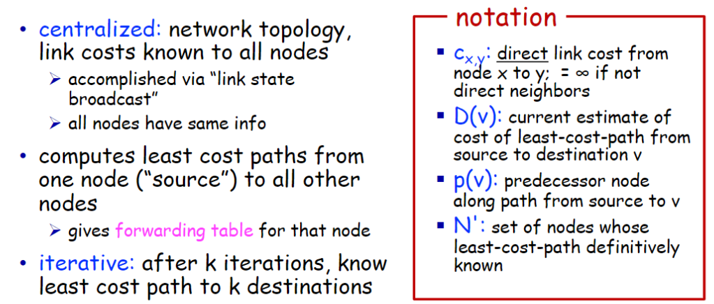
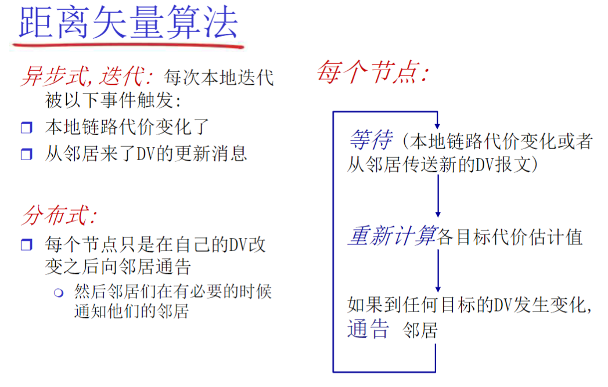

互联网计算-05网络层：控制平面
引入
网络层功能：
- 转发: 将分组从路由器的一个输入端口移到合适的输出端口——数据平面
- 路由: 确定分组从源到目标的路径——控制平面
2 种构建网络控制平面功能的方法:
- 每个路由器控制功能实现（传统）
- 逻辑上集中的控制功能实现 (software defined networking)
SDN 方式：逻辑上集中的控制平面
路由协议
路由:按照某种指标 (传输延迟, 所经过的站点数目等) 找到一条从源节点到目标节点的较好路径
网络到网络的路由= 路由器-路由器之间路由
- 网络对应的路由器到其他网络对应的路由器的路由
- 在一个网络中：路由器-主机之间的通信，链路层解决
- 到了这个路由器就是到了这个网络
图抽象：边和路径的代价
Dijkstra’s link-state routing algorithm

距离矢量路由选择 (distance vector routing)
Bellman-Ford BF

Intra-ISP routing: OSPF
实现路由可扩展性
互联网的可扩展路由方法：
- 将路由器聚合为称为“自治系统”（AS）（也称为“域”）的区域
AS 内部（又名“域内”）：同一 AS 内路由器之间的路由（“网络”）
- AS 内所有路由器必须运行相同的域内协议
- 不同的 AS 内的路由器可以运行不同的域内路由协议
- 网关路由：位于其自身 AS 的边缘，具有到其它 AS 路由器的链路
AS 间（又名“域间”）：AS 之间的路由
- 网关执行域间路由（以及域内路由）
互联 ASes
跨 AS 路由：在域内转发中扮演的角色
Open Shortest Path First
- “open”：标准可公开获得
- classic link-state：
- LS 分组在网络中（一个 AS 内部）分发
- 全局网络拓扑、代价在每一个节点中都保持
- 每个路由器拥有完整的拓扑结构，使用 Dijkstra 算法计算转发表
- OSPF 通告信息中携带：每一个邻居路由器一个表项
- 通告信息会传遍 AS（通过泛洪）
- 在 IP 数据报上直接传送 OSPF 报文（而不是通过 UDP 和 TCP）
层次性的 OSPF 路由
2 个级别的层次性：本地、骨干
- 链路状态通告仅仅在本地区域 Area 范围内进行
- 每一个节点拥有本地区域的拓扑信息
- 关于其它区域，知道去它的方向，通过区域边界路由（最短路径）
- 区域边界路由器：“汇总（聚集）”到自己区域内网络的距离，向其它区域边界路由器通告
- 骨干路由器：仅仅在骨干区域内。运行 OSPF 路由
- 边界路由器：连接其它的 ASes
ISP 之间的路由选择：BGP
Border Gateway Protocol：自治区域间路由协议“事实上的”标准
- “将互联网各个 AS 粘在一起的胶水”
允许子网向互联网其它网络通告“我在这里”
BGP 提供个每个 AS 以下方法：
- eBGP：从相邻的 ASes 获得子网可达信息
- iBGP：将获得的子网可达信息传遍到 AS 内部所有路由器
- 根据子网可达信息和策略来决定到达子网的“好”路径
BGP 基础
BGP 会话：2 个 BGP 路由器 (“peers”) 在一个半永久的 TCP 连接上交换 BGP 报文
- 通告向不同目标子网前缀的“路径”（BGP 是一个“路径矢量”协议）
路径属性 & BGP 路由
当通告一个子网前缀时，通告包括 BGP 属性
- prefix + attribute = “route”
2 个重要属性：
- AS-PATH：前缀的通告所经过的 AS 列表
- 检测环路：多路径选择
- 在向其它 AS 转发时，需要将自己的 AS 号加到路径上
- NEXT-HOP：从当前 AS 到下一跳 AS 有多个链路，在 NEXT-HOP 属性中，告诉对方通过哪个 I 转发
基于策略的路由：
- 当一个网关路由器接收到了一个路由通告，使用输入策略来接收或过滤
- 策略也决定了是否向它别的邻居通告收到这个路由信息
BGP 路径通告
- 路由器 AS2.2c 从 AS3.3a 接收到的 AS3, X 路由通告 (通过 eBGP)
- 基于 AS2 的输入策略，AS2.2c 决定接收 AS3, X 的通告，而且通过 iBGP 向 AS2 的所有路由器进行通告
- 基于 AS2 的策略，AS2 路由器 2a 通过 eBGP 向 AS1.1c 路由器通告 AS2, AS3, X 路由信息
- 路径上加上了 AS2 自己作为 AS 序列的一跳
网关路由器可能获取有关一个子网 X 的多条路径，从多个 eBGP 会话上：
- AS1 网关路由器 1c 从 2a 学习到路径： AS2, AS3, X
- AS1 网关路由器 1c 从 3a 处学习到路径 AS3, X
- 基于策略，AS1 路由器 1c 选择了路径：AS3, X，而且通过 iBGP 告诉所有 AS1 内部的路由器
转发表表项
BGP 路径选择
路由器可能获得一个网络前缀的多个路径，路由器必须进行路径的选择，路由选择可以基于：
- 本地偏好值属性: 偏好策略决定
- 最短 AS-PATH ：AS 的跳数
- 最近的 NEXT-HOP 路由器: 热土豆路由
- 附加的判据：使用 BGP 标示
一个前缀对应着多种路径，采用消除规则直到留下一条路径
热土豆路由
BGP：通过路径通告执行策略

假设一个 ISP 只想路由流量到/去往它的客户网络 (不想承载其他 ISPs 之间的流量，即不通告：不是去往我的客户，也不是来自我的客户)
-
A 向 B 和 C 通告路径 Aw
-
B 选择不向 C 通告 BAw：
- B 从 CBAw 的路由上无法获得收益，因为 C, A, w 都不是 B 的客户
- C 从而无法获知 CBAw 路径的存在：每个 ISP 感知到的网络和真实不一致
-
C 可能会通过 CAw (而不是使用 B) 最终路由到 w
-
A, B, C 是提供商网络：
-
X, W, Y 是桩网络（stub networks）或者叫端网络
-
X 是双重接入的，多宿桩网络，接入了 2 个网络
-
策略强制让 X:
- X 不想路由从 B 通过 X 到 C 的分组
- 因而 X 就不通告给 B，它实际上可以路由到 C
为什么内部网关协议和外部网关协议如此不同?
策略：
- Inter-AS: 管理员需要控制通信路径，谁在使用它的网络进行数据传输
- Intra-AS: 一个管理者，所以无需策略;
- AS 内部的各子网的主机尽可能地利用资源进行快速路由
规模：
- AS 间路由必须考虑规模问题，以便支持全网的数据转发
- AS 内部路由规模不是一个大的问题
- 如果 AS 太大，可将此 AS 分成小的 AS ；规模可控
- AS 之间只不过多了一个点而已
- 或者 AS 内部路由支持层次性，层次性路由节约了表空间, 降低了更新的数据流量
性能：
- Intra-AS: 关注性能
- Inter-AS: 策略可能比性能更重要
SDN 控制平面
传统方式：在每一个路由器中的单独路由器算法元件，在控制平面进行交互
SDN 方式：一个不同的（通常是远程的）控制器与本地控制代理（CAs） 交互
为什么需要一个逻辑上集中的控制平面？
- 网络管理更加容易：避免路由器的错误配置，对于通信流的弹性更好
- 基于流表的转发（回顾一下 OpenFlow API)，允许“可编程”的路由器
- 集中式“编程”更加容易：集中计算流表然后分发
- 传统方式分布式“编程”困难：在每个单独的路由器上分别运行分布式的算法，得到转发表（部署和升级代价低）
- 控制平面的开放实现（非私有）
- 新的竞争生态
流量工程
传统路由比较困难：
Q: 网管如果需要 u 到 z 的流量走 uvwz, x 到 z 的流量走 xwyz，怎么办？
- A: 需要定义链路的代价，流量路由算法以此运算（ IP 路由面向目标，无法操作） (或者需要新的路由算法)!
Q: 如果网管需要将 u 到 z 的流量分成 2 路：uvwz 和 uxyz ( 负载均衡)，怎么办?（ IP 路由面向目标）
- A: 无法完成 (在原有体系下只有使用新的路由选择算法 ，而在全网部署新的路由算法是个大的事情)
Q: 如果需要 w 对蓝色的和红色的流量采用不同的路由，怎么办？
- A: 无法操作 (基于目标的转发，采用 LS, DV 路由)
SDN 特点
Software defined networking (SDN)
数据平面交换机
- 快速，简单，商业化交换设备采用硬件实现通用转发功能
- 流表被控制器计算和安装
- 基于南向 API（例如 OpenFlow ），SDN 控制器访问基于流的交换机
- 定义了哪些可以被控制哪些不能
- 也定义了和控制器的协议 (e.g., OpenFlow)
SDN 控制器（网络 OS）
- 维护网络状态信息
- 通过上面的北向 API 和网络控制应用交互
- 通过下面的南向 API 和网络交换机交互
- 逻辑上集中，但是在实现上通常由于性能、可扩展性、容错性以及鲁棒性采用分布式方法实现
网络控制应用
- 控制的大脑： 采用下层提供的服务（SDN 控制器提供的 API)，实现网络功能
- 路由器交换机
- 接入控制防火墙
- 负载均衡
- 其他功能
- 非绑定：可以被第三方提供 ，与控制器厂商以通常上不同，与分组交换机厂商也可以不同
OpenFlow 协议
- 控制器和 SDN 交换机交互的协议
- 采用 TCP 来交换报文
- 3 种 OpenFlow 报文类型
- 控制器>交换机
- 异步（交换机>控制器 ）
- 对称 (misc)
控制器-交换机 报文：
- 特性：控制器查询交换机特性，交换机应答
- 配置：交换机查询/设置交换机的配置参数
- 修改状态：增加删除修改 OpenFlow 表中的流表
- packet-out：控制器可以将分组通过特定的端口发出
- 分组进入: 将分组（和它的控制） 传给控制器，见来自控制器的 packet-out 报文
- 流移除: 在交换机上删除流表项
- 端口状态: 通告控制器端口的变化
幸运的是, 网络管理员不需要直接通过创建/发送流表来编程交换机，而是采用在控制器上的 app 自动运算和配置
- 链路状态路由 app 和 SDN 控制器中流表计算元件交互，计算出新的所需流表
- 控制器采用 OpenFlow 在交换机上安装新的需要更新的流表
ICMP: Internet Control Message Protocol
由主机、路由器、网关用于传达网络层控制信息
- 错误报告：主机不可到达、网络、端口、协议
- Echo 请求和回复（ping）
ICMP 处在网络层，但是是在 IP 协议的上面
- ICMP 消息由 IP 数据报承载
ICMP 报文:
- 类型
- 编码
- 加上 IP 数据报的头 8B
- 第一个导致该 ICMP 报文的 IP 数据报
网络管理，配置
什么是网络管理？
“网络管理”包括了硬件、软件和人类元素的设置，综合和协调，以便监测，测试，轮询，配置，分析，评价和控制网络和网元资源，用合理的成本满足实时性，运行能和服务质量的要求
SNMP 协议
Simple Network Management Protocol：用于管理和监控网络设备（如路由器、交换机、服务器等）的标准化协议
- 应用层协议 基于 UDP
两种模式：
报文类型：
NETCONF
概述
- 目标：主动管理/配置全网的设备
- 在管理服务器和受管网络设备之间运行
- 操作：获取、设置、修改、激活配置
- 在多台设备上执行原子提交操作
- 查询运行时数据和统计信息
- 订阅来自设备的通知
- 远程过程调用（RPC）范式
- NETCONF 协议消息以 XML 编码
- 通过安全的可靠传输协议（例如 TLS）交换
初始化、交换、关闭
YANG
- 用于指定 NETCONF 网络管理数据结构、语法、语义的数据建模语言
- 内置数据类型，如 SMI
- 从 YANG 描述中可以生成描述设备、能力的 XML 文档
- 可以表达必须由有效 NETCONF 配置满足的数据约束
- 确保 NETCONF 配置满足正确性、一致性约束